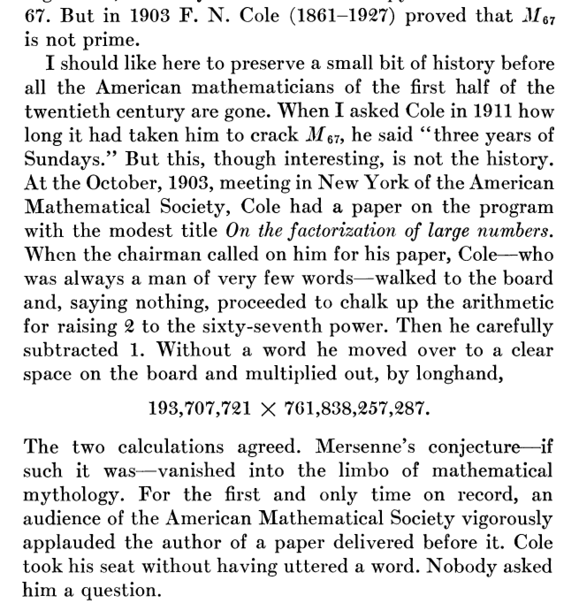

How Frank Nelson Cole factored \( M_{67} = 2^{67} - 1 \) in 1903
1 The story
The mathematician Eric Temple Bell is famous for the Bell numbers and for his biographical work such as the classic Men of Mathematics. In his The Queen of Mathematics,1 he includes the following story:

Mersenne's numbers \(M_p\) are as famous as Fermat's. They are defined by $$M_p = 2^p - 1, p = 2, 3, 5, 7, 11, 13, \dots, 257, \dots,$$ where \(p\) is prime. Mersenne asserted (1644) that the only \(p\)'s for which \(M_p\) is prime are $$p = 2, 3, 5, 7, 13, 17, 19, 31, 67, 127, 257.$$ (If \(p\) were composite, \(2^p - 1\) would be immediately factorable. For example, \(2^6 - 1 = (2^3 + 1)(2^3 - 1)\), and so on.) There are 44 other primes \(p\) less than \(257\). So, according to Mersenne, \(M_p\) is not prime for any of these. It would be of great interest to know what grounds Mersenne thought he had for his assertions. It seems unlikely that he was just crudely guessing. He was an honest man and he was not a fool. Nevertheless he was far wrong. His first error was detected in the 1880s, when \(M_{61}\) was proved to be prime. This was shrugged off by those who still believed that the mysterious Father Mersenne really knew what he was talking about; 61 was just some careless copyist's mistake for 67. But in 1903 F. N. Cole (1861–1927) proved that M67 is not prime.
I should like here to preserve a small bit of history before all the American mathematicians of the first half of the twentieth century are gone. When I asked Cole in 1911 how long it had taken him to crack M67 he said “three years of Sundays.” But this, though interesting, is not the history. At the October, 1903, meeting in New York of the American Mathematical Society, Cole had a paper on the program with the modest title On the factorization of large numbers. When the chairman called on him for his paper, Cole—who was always a man of very few words—walked to the board and, saying nothing, proceeded to chalk up the arithmetic for raising 2 to the sixty-seventh power. Then he carefully subtracted 1. Without a word, he moved over to a clear space on the board and multiplied out, by longhand, $$193{,}707{,}721 \times 761{,}838{,}257{,}287.$$ The two calculations agreed Mersenne's conjecture—if such it was—vanished into the limbo of mathematical mythology. For the first and only time on record, an audience of the American Mathematical Society vigorously applauded the author of a paper delivered before it. Cole took his seat without having uttered a word. Nobody asked him a question.
This story has been widely repeated. You can find it on several Wikipedia pages, and it also made an appearance in an episode of This American Life as a conversation between Paul Hoffman and the host Ira Glass. According to this conversation, Mersenne's conjecture was a "formula" to spit out prime numbers, his paper ended with \(M_{67}\) being prime, and 1903 Cole "shows up" at a mathematical conference, multiplies the numbers without saying a word, shows Mersenne's 250-year old formula is wrong, gets applause, and Paul Hoffman thinks they were spent in trial division, trying to divide by every single number.
Doubt by Corey…
The doubt itself is doubtful…
https://hsm.stackexchange.com/questions/2105/whats-the-famous-story-about-a-mathematician-who-gave-a-talk-without-saying-a-w http://mathforum.org/kb/message.jspa?messageID=66462 https://mathoverflow.net/questions/207321/how-did-cole-factor-267-1-in-1903 https://books.google.com/books?id=DQXvAAAAMAAJ&dq=dickson%20history%20of%20the%20theory%20of%20numbers%20seelhoff&pg=PA365#v=onepage&q=seelhoff&f=false http://www.prothsearch.net/fermat.html#Summary (mentions of Seelhoff)
1.1 What we know from Bell's life
Constance Reid's meticulous investigations have thrown a lot of light on the life of E. T. Bell.
He left Britain in the beginning of July 1902 (p. 95), and enrolled in Stanford at the beginning of September 1902 (p. 97). He joined "on probation" (p. 98): if he passed the term examinations he could continue. He registered for seven courses in his first semester, passed in all of them, and in January 1903 he was granted "full entrance standing" (p. 100). While at stanford he supported himself by tutoring students for examinations (p. 103). Given this background, October 1903 would have been during term of his second year as an undergraduate at Stanford.
From the clear impression one gets from Reid's book of life at the time, it seems rather likely is it that a second-year undergraduate student from California would make a trip to New York to attend the meeting of the American Mathematical Society, or even would be permitted to.
After getting an undergraduate degree (AB) from Stanford and working briefly in San Francisco in a telephone company, he did however, in February 1907, attend the meeting of the San Francisco section of the AMS, and presented A Note on linear congruences (p. 117).
He was to go on and receive an AM from Washington, work for a few years teaching at a rural highschool, and only at 28 (almost ten years later) join Columbia university and get a PhD (in June 1912, ten months after he arrived in NYC). At that university, his advisor may have been Frank Nelson Cole – speculates Constance Reid.
The AMS began in 1888 as the New York Mathematical Society – the meetings were always held in New York (and Bell was at Stanford in 1903, in a precarious position). The first time Bell presented a paper was at the October 1912 meeting, and that too was in absentia as he had moved to Seattle (University of Washington) after getting a PhD in June 1912 and joined faculty of Columbia in September 1912. Even in spring 1914, when the San Francisco section of the AMS held a meeting in Seattle, Bell was still not a member of the AMS. It is only in 1917 that his name first appears on the membership list of the AMS (p. 171).
In his earlier Queen of the Sciences there is no mention of this topic (or factorization/Mersenne at all): https://archive.org/details/queenofthescienc031537mbp
His later (1937) Handmaiden of the Sciences, and this book, were together merged into that 1951 book.
2 The history of factorization
(It turns out that the first few primes \(p\) for which \(M_p\) is prime are: $$2, 3, 5, 7, 13, 17, 19, 31, 61, 89, 107, 127, 521, 607, 1279, \dots$$ and the largest known primes as of today are Mersenne primes.)
Fermat: difference of squares – forgotten
Fermat: little theorem, not generally helps with factorization, but helps restrict primes for this particular number
Legendre: quadratic residues give more restrictions
Gauss: Finding small quadratic residues by combining different quadratic residues which factor over small primes.
Seelhoff: (1) Extends Lagrange's and Gauss's method to find small quadratic residues (2) Extends Fermat's difference of squares to a congruence of squares.
Cole: (1) Uses Lagrange/Gauss/Seelhoff method to find small quadratic residues and thereby exclude a lot of primes (2) Then changes tack
Cole, On The Factorization of Large Numbers https://projecteuclid.org/download/pdf_1/euclid.bams/1183417760
https://books.google.com/books?id=jUvkAAAAMAAJ&lpg=PA169&dq=5045995048467&pg=PA166#v=onepage&q&f=true https://books.google.com/books?lpg=PA169&dq=5045995048467&pg=PA166&id=jUvkAAAAMAAJ&output=text https://books.google.com/books?id=udU4AAAAIAAJ&lpg=PA169&dq=5045995048467&pg=PA306#v=onepage&q=5045995048467&f=false
Factoring and primality are closely related.
2.1 Order theorem
Claim: If am = 1 mod N, then d divides m.
Consider any number N > 1, and any \(a\) such that gcd(N, a) = 1. We can prove that the powers of a look like:
1, a, a2, …, ad-1, ad, ad+1, ad+2, …, a2d-1, a2d, a2d+1, a2d+2, …, a3d-1,
and so on, where d is the smallest positive exponent for which ad = 1, and 1, a, …, ad-1 are all distinct mod N.
We have proved: Order theorem: If am = 1, then d divides m.
2.1.1 Proof
Consider the sequence 1, a, a2, a3, a4, …. modulo n. That sequence must repeat at some point, i.e. you must have aj ≡ ak for some j and k. This gives a(k-j) ≡ 1, so there exists some power of a that is equal to 1 mod n. Consider the smallest such power > 0, call it d (so ad ≡ 1 but no smaller power of a is 1). Then a(i+d) = ai for all i, i.e. the sequence of powers of a (the sequence above) repeats every d elements. We can write the sequence as: 1, a, a2, a3, …, a(d-1), ad, a(d+1), a(d+2), …, a(2d-1), a2d, a(2d+1), a(2d+2), …, a(3d-1), …. where in each column all the elements are equal (or in other words, all the rows are the same). Moreover, in the first row (and thus in every row), all elements are distinct.
2.2 Fermat theorem
If these \(d\) powers of \(a\) don't cover all numbers relatively prime to N, then pick some b not covered, and look at {b, ab, a2b, a3b, …, ad-1b}. They are all distinct, and distinct from already seen numbers. If anything's still not covered, pick a c and look at {c, ac, a2c, …, ad-1c}. Repeating this, we get that d divides the total number of elements, the order of the group.
In particular if N is prime, then d divides N-1, so aN-1 = 1.
2.3 Fermat's trick: For N = 267 - 1, gives p = 134k + 1.
If N = 267 - 1 and p divides N, then
267 = 1 mod p (from p dividing N)
with the order theorem gives d divides 67 and therefore d = 67. Next,
2(p-1) = 1 mod p (from Fermat)
gives 67 divides p - 1, and obviously so does 2, so 134 divides p-1.
In general, if p is any prime divisor of 2q - 1 (where q is an odd prime), then q = 1 (mod 2p). This was known to Fermat!
2.4 Historical aside: Wilson's theorem as example of primality test
n is prime iff (n-1)! = -1 (mod n). The proof: If n is composite and has a factor p > 1, then (n-1)! has p as a factor in it so it's 0 mod p, so it can't also be -1 mod p. And if n is prime, then for every k ≠ 1, -1, the inverse of k (namely k' such that kk' = 1 (mod n)) is distinct from k, so in the 2…(n-2) part of (n-1)! all the inverses are paired up, leaving 1*(n-1) = -1 (mod n). QED. This is in some sense a primality test, if only (n-1)! was easy to compute. Which it is not! So moving on…
2.5 Reuschle
In 1856, Reuschle published (among other items) a table of factors of 2n - 1 and 10n - 1 for all n ≤ 42, and in 1869, Landry published a table of factors of 2n ± 1 for n ≤ 64. The "holes" in these and other tables provided a source of challenges in factoring and primality testing…
2.6 Lucas test
This basically verifies that \(a\) has order (N-1) mod N, i.e. that \(a\) is a generator (primitive root) mod N.
Suppose a(N-1) = 1. This immediately means that (N-1) is a multiple of d, whatever it is. Further, suppose we have a prime factorization of (N-1), and that for every prime q dividing (N-1), we have a((N-1)/q) ≠ 1 mod N. This means that d has to be (N-1) itself. This means that N is prime.
2.7 Pratt certificates
Given N, show (1) an a such that a(N-1) = 1 (2) a prime factorization of (N-1) along with Pratt certificates for those primes Verify: For every q in that prime factorization, a((N-1)/q) ≠ 1.
2.8 Quadratic residues
When is the number \(a\) a quadratic residue mod \(p\)?
One method is to just square all numbers 1 to p-1 (or the first half of them) and see if any of them give \(a\). A faster method is Euler's criterion (https://en.wikipedia.org/wiki/Euler's_criterion): compute a((p-1)/2) mod p, and check whether you get 1.
By quadratic reciprocity magic, one gets some congruence conditions: e.g. 2 is a quadratic residue mod p only when p = ± 1 mod 8, rather than being ± 3 mod 8.
2.9 Largest known primes by year
2.10 1588 Cataldi 219 - 1
In 1588, Cataldi (https://en.wikipedia.org/wiki/Pietro_Cataldi) proved that N1 = 219 - 1 = 524287 is prime, by trial division (trying all primes < √N). Until 1772, this seems to have been the largest prime known!
2.11 1747 Euler 232 + 1
Disproves Fermat number conjecture by showing that 641 divides 232 + 1.
2.12 1772 Euler 231 - 1
In 1772, Euler proved that N2 = 231 - 1 = 2147483647 is prime. He used:
2.12.1 Fermat's trick:
If p divides 231 - 1, then 62 divides p - 1.
2.12.2 Euler's trick:
If p divides N2 = 231 - 1, then it also divides 2N2 = 232 - 2 = (216)2 - 2. This means that 2 is a quadratic residue mod p. Now we can look up a quadratic residue table, and find out that this means p is 1 or 7 mod 8 (instead of being 3 or 5 mod 8).
2.12.3 Putting them together:
Together the two tricks give p = 1 mod 31 and ±1 mod 8, which turn out to imply that it's 1 or 63 mod (31*8). This has cut down the set of numbers we need to check by a factor of 124, which is a lot! Further he only needs to check primes, so this is the list of 85 primes to try dividing by: [1, 311, 1303, 1489, 2543, 2729, 2791, 4217, 5023, 5209, …, 42409, 42719, 42967, 43649, 43711, 44207, 44641, 45137, 45943]
2.13 1851 Looff 999999000001
This is a factor of 1018 + 1 = 101 * 9901 * 999999000001 According to Reuschle.
2.14 1859 Landry 231 - 1
Believing that 231 was still the largest prime known, Landry tried to give a shorter proof than Euler's. He used many clever tricks and said he had a proof that would fit on a single page. He also states he proved that in the factorization of 275 + 1 = 3 3 11 251 331 4051 1133836730401, the last factor 1133836730401 was prime.
2.15 1869 Landry (253 + 1)/(3 * 107) (has 14 digits)
Technique was known to Fermat. (Will come back to this later.)
At this point, the only numbers 2n ± 1 for n <= 64 that were not yet factored were: 259 - 1, 261 - 1, 261 + 1, 264 + 1.
2.16 1878 Landry factors 259 - 1.
According to Lucas.
He did suspect that 261-1, (261+1)/3, and 264+1 were all primes, but he did not say he has proved any of them.
2.17 1876 Lucas 2127 - 1 (is huge, 39 digits!)
A lot of genius theorems that are still used today. Also an extremely clever reduction of the problem to a "game" of moving around pawns on a 127x127 chessboard. No writing ever. Have only a binary answer yes/no at the end. Mistakes likely. With all this, the authors (…& Shallit) estimate he did this in 170-300 hours.
2.18 1877 Reuss shows M89 composite
Says it took him 240 hours of work. 1888 he says he's shown M67 is composite, but the correct conclusion is via a mistake in his calculations.
2.19 1883 Pervouchine / 1886 Seelhoff / 1887 Hudelot: 261 - 1
Seelhoff only sort of: appears to have just proved that 3N-1 = 1 mod N, for N = M61. But confirmed 1887 by Hudelot with 54 hours of work (using Lucas's theorems). And same earlier by Pervouchine.
Used this by Lucas: Theorem: If p = 24m+1 - 1 where (4m+1) is a prime, then p is a prime if p|S4m where S1 = 4 and Sk = Sk-12 - 2 (mod p).
2.20 1894 Fauqembergue declares M67 composite
(In 1912 he says he used a machine he built, and it took only 20 hours on it.)
2.21 ???? Lucas shows 264 + 1 = F6 is composite
2.22 ???? Landry learns the above and factorizes 264 + 1
2.23 1930 Lucas-Lehmer test
Lehmer completed the proof of necessity which Lucas never explicitly claimed (though it was already proved in his works, in 1878).
2.24 Prolific Lucas
His work is in 13 papers published between January 1876 and January 1878, during which time he wrote at least 70 papers on many other subjects.
2.25 Factoring is harder
Lucas verified a 39-digit number (2127 - 1) to be prime in 1876, but it was only in 1970 with a computer that it became possible to factor a 39-digit number.
2.26 Factoring and difference of squares
If N is odd and N = rs where 1 < r < √N, then with a = (r+s)/2 and b=(s-r)/2, we have √N < a < (N+1)/2 and N = a2 - b2. So b2 = a2 - N = x needs to be a square, for some a in [floor(√N) + 1, …, (N-1)/2]. Start trying! We can go from one value of a2 - N to the next by adding (2a+1). {Basically we keep adding the next odd number.}
2.27 Finding a quadratic residue cuts down by half
If we find a quadratic residue \(a\) mod N, then this cuts down the number of primes we need to check by a factor of 2.
E.g.: if 2 is a quadratic residue mod p, then p is 1 or 7 mod 8. if 3 is a quadratic residue mod p, then p is 1 or 11 mod 12. if 5 is a quadratic residue mod p, then p is 1 or 4 mod 5. if 7 is a quadratic residue mod p, then p is 1, 3, 9, 19, 25, 27 (mod 28). Legendre had tabulated this many values of a.
So by finding k quadratic residues mod N, we can cut down the set of primes to check by 2k (roughly, test only one in every 2k primes, up to √N).
2.28 How to find a (small) quadratic residue mod N: Legendre
To find out that \(a\) is a quadratic residue mod N, we can either find some x2 = a (mod N), or more generally x2 = a y2 (mod N). N divides (x2 - a y2). (x2 - a y2) = kN.
Legendre proposed a method where from the continued fraction for sqrt(kN), we can find A,B,Q such that A2 - k*N*B2 = Q, and we can take \(a\) to be the square-free part of Q.
"The determination of small (in absolute value) quadratic residues of N is still considered to be a very difficult task."
2.29 Filtering an equation: Gauss
To find integer solutions to a + mx = y2, (or more generally to any f(x) = g(y) where f and g are integer polynomials), we can look at it modulo various primes, and come up with congruence constraints on x. (In the case of a + mx = y2, each such constraint cuts down our search space in half.)
2.30 Getting small residues: motivation
I had an idea: hey for large N, we already know a lot of small quadratic residues: 1, 4, 9, 16, 25, 36, 49, …! But all of them have square-free part 1, so they don't give any new information. By contrast, a residue like 363 = 112 * 3 gives that 3 is a quadratic residue, which actually gives us some useful constraints.
Just as we can get small residues from the equations 0 = 22 - 4 0 = 32 - 9 0 = 42 - 16, etc. These equations can also be written N = 22 + (N - 4) <=> (4-N) = 22 - N N = 32 + (N - 9) <=> (9-N) = 32 - N N = 42 + (N - 16) <=> (16-N)= 42 - N etc.
2.31 Small quadratic residues: Seelhoff
Cole refers to these papers, but as Williams & Shallit say, it's not clear whether other mathematicians really took proper notice of these papers. (Except Kraitchik.)
He has a method of factorization that requires small quadratic residues mod N, which he finds as follows.
Write N = m2 + r, where m = floor(sqrt(N)).
2.31.1 My motivation
We want small quadratic residues mod N.
One observation is that for any quadratic residue, its squarefree part is also a quadratic residue: if b = a2 r, and if b = x2 mod N, then x2 = a2 r (mod N) gives r = (x/a)2 (mod N). So we only need to look at the squarefree part of any residue.
So the "small" residues 1, 4, 9, 16, 25, 36, 49… all just say that 1 is a residue mod N.
We have another starting point though: starting with N = m2 + r, this gives one quadratic residue -r = m2 (mod N), and of course we'll remove squares from -r. We want other such residues in place of -r, so we want to vary m. We can just keep changing m to m±1, m±2, m±3, …, look at the correspoding residues, and remove their square parts (for which we need to at least partially factorize them).
Seelhoff has a further trick, which helps us look at only specific m ± alpha, and further get a headstart in factorizing the corresponding residues (m ± alpha)2 - N. This trick is to make those residues divisible by some known pk.
Note that in N = (m + alpha)2 - r, the residue r is divisible by pk iff (m + alpha)2 = N (mod pk).
Pick a prime p modulo which N is a quadratic residue. We will try to get a quadratic residue mod N that is divisible by p (or even a higher power of it). A quadratic residue mod N is a number q such that for some x, N divides q - x2 (or x2 - q).
Solve x2 = N (mod p). To get a residue mod N out of the square of a number that is congruent to x mod p, we'd have to take a large such number. Say we take x' = x + yp. Then (x + yp)2 = N (mod p). And the residue mod N is (x + yp)2 - N, which we want to be a small positive number. So we want (x + yp) to be a little less than m. How much less? Say alpha less. (x + yp) = (m - alpha). N = (m - alpha)2 + (N - (m - alpha)2). The latter number, (N - (m-alpha)2), is the residue, and it is also divisible by p. We can do this even for a larger power of p.
2.31.2 Seelhoff
Pick a prime p modulo which N is a quadratic residue, and find x2 = N (mod p). Put alpha = m ± (x + y pk). Now, apart from being N = m2 + r, it is also N = (m - alpha)2 + b = (x + y pk)2 + b
Here what is b? It is b = N - (m - alpha)2 = m2 + r - (m2 + alpha2 - 2m alpha) = r - alpha2 + 2m alpha = alpha(2m - alpha) + r.
And of course as b = N - (m - alpha)2, we have -b is a quadratic residue mod N. What's the point of all this? The point is that our residue b is now divisible by pk: we have b = N - (x + ypk)2 = N - x2 (mod pk).
Moreover, the size of b is about alpha(2m - alpha) which is about pk * 2√N. And it's already divisible by pk. So the remaining part to factorize is only about 2√N. Hopefully that will be easier.
Remove the square part from \(b\), and the squarefree part is a (relatively) small residue.
2.31.3 Example
Let's work with \(N = 7 \cdot 2 ^ {34} + 1 = 120259084289\) (we probably don't have to calculate this number?), as Seelhoff did. Let m = floor(sqrt(N)) = 346783, so that N = m2 + r for r = 635200.
Mod 2: x2 = N (mod 2) has solution x = 1, so we want an odd number close to m. m itself will do. This means that for m, m ± 2, m ± 4, m ± 6, …, the corresponding residues are always divisible by 2.
Mod 4: x2 = N (mod 4) has solution x = ±1, and m is -1 mod 4. This means that for m, m ± 2, m ± 4, m ± 6, …, the corresponding residues are always divisible by 4.
Mod 8: x2 = N (mod 8) has solution x = ±1, ±3, and m is -1 mod 8. This means that for m, m ± 2, m ± 4, m ± 6, …, the corresponding residues are always divisible by 8.
Mod 16: x2 = N (mod 16) has solution x = [1, 7, 9, 15] mod 16, and m is 15 mod 16. This means that for m, m + 2, m + 8, m + 10, m + 16, … and for m - 6, m - 8, m - 14, m - 16, …, the corresponding residues are always divisible by 16.
Mod 3: x2 = N (mod 3) has no solutions.
Mod 5: x2 = N (mod 5) has solutions x = [2, 3], and m is 3 mod 5. This means that for m, m ± 5, m ± 10, …, and for m -1 ± 5, m - 1 ± 10, m - 1 ± 15, the corresponding residues are always divisible by 5.
Mod 25: x2 = N (mod 25) has solutions x = [8, 17], and m is 8 mod 25. This means that for m, m ± 25, m ± 50, …, and for m + 9 ± 25, m + 9 ± 50, …, the corresponding residues are always divisible by 25.
Mod 7: x2 = N (mod 7) has solutions x = [1, 6], and m is 3 mod 7. This means that for m - 2 ± 7k and for m + 3 ± 7k, the corresponding residues are always divisible by 7.
Mod 49: x2 = N (mod 49) has solutions [8, 41] maybe better written as [8, -8], and m is 10 mod 7. This means that for m - 2 ± 49k and for m - 18 ± 49k, the corresponding residues are always divisible by 49.
Mod 11: x2 = N (mod 11) has solutions [5, 6] and m is 8 mod 11. This means that for m - 2 ± 11k and for m - 3 ± 11k, the corresponding residues are always divisible by 11.
[Skipping ahead to…] Mod 37: x2 = N (mod 37) has solutions [7, 30] and m is 19 mod 37. This means that for m - 12 ± 37k and for m + 11 ± 37k, the corresponding residues are always divisible by 37.
Mod 372: x2 = N (mod 372) has solutions [155, 1214] and m is 426 mod 37. This means that for m - 271 ± (37*37)k and for m - 581 ± (37*37)k, the corresponding residues are always divisible by 37*37.
Mod 1272: x2 = N (mod 1272) has solutions
Using m gives N = m2 + 635200, which means that -635200 is a residue mod N. -635200 = - (2**6) * (5**2) * 397, so -397 is a residue as well.
Using m ± 2 gives: (m-2 gives) N = 3467812 + 2022328, which means -2022328 is a residue mod N. (m+2 gives) N = 3467852 - 751936, which means 751936 is a residue mod N. Alternatively we can say alpha is ± 2, and so residues are -alpha(2m - alpha) - 635200 = {-2022328,751936}. Either way, we have residues -2022328 = -23*73*11*67 giving -2*7*11*67 and 751936 = 26 * 31 * 379 giving 31*379. m ± 4.
From (1) N = 3448332 + 2.7.11.29602 = 3448332 + 2.7.11.(24.5.37)2 (2) N = 2033512 + 7.1061722 = 2033512 + 7.(22.11.19.127)2 we try to make the latter (the full factorized) terms equal, so we multiply the first equation by 11.192.1272 and the second one by 25.52.372, giving new equations: (1') 11.192.1272 N = 11.192.1272.3448332 + 29.52.7.112.192.372.1272 (2') 25.52.372 N = 25.52.372.2033512 + 29.52.7.112.192.372.1272 and subtracting them gives: (4) 62953059.N = 11.192.1272.3448332 - 25.52.372.2033512 which we can view as
(4') 11.(19.127.344833)2 = 2(24.5.37.203351)2 (mod N) How do we combine this with (3) N = 3506192 - 2.11.(2.37.149)2 or with (3') 3506192 = 2.11.(2.37.149)2 (mod N)
to get the final congruence of squares (5) 112.(37.149)2.(19.127.344833)2 = (2.5.37.203351)2.(350619)2 ?
2.32 von P. Seelhoff's publication history
(Paul Peter Heinrich Seelhoff)
2.32.1 Prüfung grösserer Zahlen auf ihre Eigenschaft als Primzahlen
April 1885, American Journal of Mathematics Vol. 7 No. 3, pp 264–269 http://www.jstor.org/stable/2369272 Volume toc: http://www.jstor.org/stable/2369453?seq=2#page_scan_tab_contents Vol. 7, No. 3 backmatter: http://www.jstor.org/stable/2369276?seq=2#page_scan_tab_contents (Note Poincare, C. S. Peirce, MacMahon)
Examination of larger numbers for the property of being prime numbers
> The table below contains a compilation of binary quadratic forms whose [discriminant] is negative and whose middle coefficient is zero, while the outer coefficients are relative primes. (So ax2 + cy2 where where ac > 0 and gcd(a, c) = 1.)
> As for the characters, which correspond to them, there exists no other reduced form with the same determinant, then must be represented every prime N with the corresponding characters by either one of these forms, if this stands alone, or alternatively by one of two, when they paired happen or through one of four, when connected to four. > Because the determinants are partially relatively large, so they present a good way to test even very large numbers without much effort from work to see if they are prime numbers and also to determine the factors, if they are composite latter of course, only in the case when the determinant is a quadratic residue of the number, and therefore also of all its factors. > The table contains only the formula for numbers of the form 8n + 1, and it will be found, on closer examination, that these forms cover all possible cases.
> About setting up the table following should be stated. > Since it is necessary that the determinant quadratic residue which is to be tested number N, then it is first necessary as the individual primes which constituiren former to N or vice versa, how N acts as a prime number in this respect. > Is now a N congruent quadratic residues modulo after a, then a is registered in the table below +, in the other case under -. (I think this means the table has "+" under "a" if N is a quadratic residue mod a.) > Thus one finds, for example. in row 33 the prime 3 under - and 5 under +, visit the forms for this individual form (5, 9) or completely (5, 0, 9) and the paired forms (9, 20 / 5, 36) that is N = 1 (3) and N = 1 or 4 (5), so N is a prime number if it can be represented only in one way by the form (5,0,9), or if one chooses the paired forms for testing, if only a representation by either (9, 0, 20) or ( 5, 0, 36) is possible. > On line 10, we find that both are 3 and 5 on + and its forms are 4 in number. > Thus, if N = 1 (3) and = 1 or 4 (5), so it is a prime number, when it can be displayed again by one of the four forms. > Both in the first as in the second case is true, furthermore, that if one finds no representation or more than one for N, this can only be a composite number, and that if there is more than an illustration of these representations, the factors of N can be derived.
> To also show how advantageous the numbers to four connected can be used for testing very large numbers themselves, i'm voting for an illustrative example, the number N = 231 - 1 = 2147470249. As is known, Euler has this number first investigated namely by means of division by the only possible primes of the form 248z + 1 and 248z + 63 up to √N = 46339 and the same determined as prime.
> If we choose for the same purpose a form which belongs to the table for the numbers of the form 8n + 7. > For N = 1 (3) = 1 (7) = 1 (11) = 7 (29) to the associated forms (1, 0, 13398), (22, 0, 609), (42, 0 , 319), (58, 0, 231). > One and only one of these has a single representation of N type, if this is a prime number; then any attempt by the others still remaining forms is futile. > No representation for all 4 forms would arise, so N would not prime, just not when it turned out more than a representation of the same shape. > Now is the first form (1, 0, 13398) no representation, so I'll go straight to the second (22, 0, 609) than to confront you the whole process in general. > So there 22x2 + 609y2 = N should be, so N must in those two parts be broken, one of which is a multiple of 22, the other is one of 609. > Substituting accordingly 22a + 609b = 2147483647 > then {a = 97612810 - 609k ; b = 3 + 22k}
> Since a = x2, so the values of a' for x must be so taken that 97612810 -a'2 is divisible by 609. > 609 = 3.7.29. > 97612810 = 1 (3), = 1 (7), = 28 (29) > and since > 12=1(3), 12=1(7), 122= 28 (29), > so is > x = 3t ± 1 = 7u ± 1 = 29v ± 12. > From this follow 8 values for x, namely > x = 609n + 41, 104, 244, 302, 307, 365, 505, 568 > up to the bound √97612810 = 9879. > Substituting these for x, gives k and therefrom b, as an illustration is found, if b is a perfect square and at x corresponds y=√b. > Incidentally, all the even values for x are not eligible, because they deliver 22x2 + 609y2 = N only numbers of the form 8n + 1, > and fall from the odd ones still with the final number 5, since it can be seen in advance that they can not bring forth perfect square for b. > For x = 7001 will then b = 1755625 and y = 1325, so 22.70012 + 609.13252 = 2147483647. > Since there is no further illustration of this form and as the number is thus a prime number, so the investigation is completed.
> As an example of a composite number may serve N = 165580141. > There N=6(7), =1(11), = 12(13), > so one can geparten the forms (14, 0, 143) and (26, 0, 77) to use and is replaced with the first: > 14.13992 + 143.9832 = 165580141 > 14.30892 + 143.4732 = 165580141 > But if α, β and γ, δ are two representations of the number N of the form (m, n), > so you set > p/q = (α ± γ) / (β ± δ), > and reducing the resultant fractions, so that p is equal to the nuemrator and q is the denominator. > Then we form further the break-up > r/s = mp2 / nq2 and reduce, so here r is the numerator and the denominator is equal to s. > Then f = r + s (or if it is an even number, half of it) is a factor of N.
> So in our example p/q = (3089 - 1399)/(983 - 473) = 1690 / 510 = 169 / 51. > r / s = 14.1692 / 143.512 = 30758 / 28611. > f = r + s = 59369.
> From p/q = (3089 - 1399)/(983 + 473) = 65 / 56 > one finds the second factor in 2789, thus > 2789.59369 = 165580141
> The selected number is the 41st member of the series > 0, 1, 1, 2, 3, 5, 8, 13, 21 . . . (It's F40)
> In conclusion, my communication of I would like to point out that in addition to the tables for the forms, of which the is given here initially serve only as an example, a sufficiently wide-ranging panel of square numbers and the way a small table is necessary, which for occurring in the determinants primes a the roots of the congruence z ^ 2 = r (a) angiebt.
> The number of determinants used is 170, of which 65 are called by Euler "numeri idonei;" from the other can be found in individual Legendre: Theory of nombres or otherwise in mathematical journals. The majority of them I myself have notice.
> Bremen in August 1884.
2.32.2 Prüfung Grösserer Zahlen auf Ihre Eigenschaft als Primzahlen
September 1885, American Journal of Mathematics Vol. 8 No. 1, pp. 26–38 http://www.jstor.org/stable/2369356 Volume toc: http://www.jstor.org/stable/2369352?seq=2#page_scan_tab_contents Vol. 8, No. 1 backmatter: http://www.jstor.org/stable/2369360?seq=2#page_scan_tab_contents
> As a continuation of my remarks in Nro. 3 I give first a tabular summary of 192 negative determinants. The table consists of 3 columns. The first labeled D gives the determinants itself, the second is derived from the main forms (Formae principales) and the third the Gesammtcharakter of these forms. As essential and necessary for the present purpose characteristic of these major forms should be emphasized that no other reducirten forms exist alongside them with the same Gesammtcharakter again. The name of the individual characters 3n + r, 3n-r, etc. means that the number N, which is to be displayed, is for 3 etc. quadratic residue, respectively nonresidue. If several forms same Gesammtcharakter, this is specified in detail only the first form.
> A study carried out for the number types 8n + 3, 8n + 5 and 8n + 7 separation of forms not seemed practical because thereby many repetitions would necessarily, and if I may judge from my own experience, as is the now selected compilation for use of sufficient clarity.
> I want to prove this by an example, which will give me also the opportunity that in the previous essay to complete the procedure Beige Brought in individual points.
> Mr. J. W. L. Glaisher in Cambridge manifests itself in one of his essays, as follows: "The process of determining without a table the factors of a number is excessively laborious. Thus to determine, for example, whether the number 8559091 is or not a prime would require a long day's work." Let us see!
> It can be found immediately that this number N quadratic residue for 3, 5, 7, 17, 19, 23, on the other hand nonresidue for 11, 13, 29, 31. Among the forms for which can be found united in conjunction with the specific nature of 8n + 3, some of these characters, I selected two major forms (15, 0, 364) and (60, 0, 91) of the determinant -5460 for which my has 3n+r, 5n + r, 7n + r, 13n-r; > 8n + 3, 7,
> (Eq1.) 15a + 364b = N > Since N = 1 (15), 364 = 4 (15), and 4.4 = 1 (15), I subtract 364.4 from N and divide by 15. (I think this means he's trying to find solutions to 15a + 364b = N – note that mod 15, we have 364b = N which gives 4b = 1 so b = 4 (mod 15). And so of course taking b=4 gives one solution a.) > Then (This should give 570509, but in the paper he has a typo and consistently uses 575509.) > a = 575509 - 364k > b = 4 + 15k > It has also been 575509 = 4(7), = 12(13), sets it accordingly (note now he's definitely taking the typo seriously, as the correct thing would be 570509 = 2 mod 7) > 15x2 + 364y2 = N > so x = 4t ± 1 = 7u ± 2 = 13v ± 5 > and because > √575509 = 758 > forms the upper bound > x = 5, 47, 135, 177, 187, 229, 317, 359, 369, 411, 499, 541, 551, 593, 681, 723, 733. > On passing from this with the help of perfect square panels k and secondarily from b, so The latter for any of these values is a square. (He's done I think.)
> (Eq2.) 60a + 91b = N
> Similar to above, one finds [note that one is super-lucky here: \(N \equiv 31 \equiv 91 (\mod 60)\), so b=1 works.]
> a = 142650 - 91k
> b = 1 + 60k
> x = 12, 40, 51, 79 103, 131, 142, 170 194, 222, 233, 261 285, 313, 324, 362
> For x = 376 is b or y2 a squares, namely 841 = 292. So is 8559093 = 60.3762 + 91.292 is a prime number.
(Note he means N = 8559091, the 8559093 here is a typo.)
> I also have to come back in a different relationship to the remarks in the first article. At one or two places where it is more main forms with communal Gesammtcharakter, my language was perhaps not precise enough, I allow myself therefore to prevent any misunderstandings, a few words.
> From determinant -1012 following main forms can be to give an example derived.
> {1, 0, 1012} {11, 0, 92}
> {4, 0, 253} and {23, 0, 44}.
> The two forms in the first bracket have the same Gesammtcharakter, as are the two in the second bracket. If we call now Gaussian such Complex shapes with the same Gesammtcharakter a genus (genus), it follows for every 192 determinants following: Is obtained from all forms of a genus only a representation of the number N, so this is a prime number; obtained no representation, so N is composed. Is obtained more than a representation of one and the same form, or for several of the species belonging, as can be derived from a pair of such images, a pair of N factors.
> How this can happen in the event that both representations are formed by the same type, I have shown in the first item after the example of Euler; So there still remains the other case where two different shapes are used to represent. So be on the determinant -mnp > mnx2 + py2 = N (1) > mX2 + npY2 = N (2) > so multiplying (2) with nx2 and (1) with X2, then > mn (Xx)2 + p(Xy)2 = X2 N > mn (Xx)2 + p(nXY)2 = nx2 N > and from this > p {(Xy)2 - (nXY)2} = (X2 - nx2) N
> If one determines now the greatest common divisor of Xy + Nyx or Xy - Nyx and N, so this is one of the sought divisors. > Bremen in May 1885.
2.32.3 Nova methodus numeros compositos a primis dignoscendi illorumque factores inveniendi
September 1885, American Journal of Mathematics Vol. 8 No. 1, pp. 39–44 http://www.jstor.org/stable/2369357
2.32.4 Zeitschrift math. u. Phys., Vol. 31, 1886, p. 380
Found a factor of the Fermat number 2236+1, namely that it is divisible by 5*(239) + 1. Mentioned in http://www.jstor.org/stable/2974245 Gauss's proof of which polygons were constructible: Greeks knew 2n*(1, 3, 5, 3*5). Gauss proved at age 19 that primes p=22µ+1 are constructible, so additionally 17, 257, 65537 and products thereof.
Other relevant papers:
2.32.5 R. E. Powers, The Tenth Perfect Number
http://www.jstor.org/stable/2972574?seq=1#page_scan_tab_contents Mentions that Seelhoff showed that 2p-1 is prime for p=61, and Lucas's theorem
2.32.6 D. H. Lehmer (1930), A fallacious principle in the theory of numbers
Misunderstands Seelhoff and Cole's principle
2.32.7 L. E. Dickson, Perfect and Amicable Numbers
http://www.jstor.org/stable/6610 Same: Mentions that Seelhoff proved in 1886 that 261-1 is prime.
2.33 Cole
He picks only the residues ralpha = (m + alpha)2 - N that are divisible by the first 70 prime numbers (primes up to 349).
Footnotes:
The Queen of Mathematics is a book chapter, first published in his Mathematics, Queen and Servant of Science (1951), later republished in James R. Newman (ed), The World of Mathematics, Vol 1 of 4 (1956)